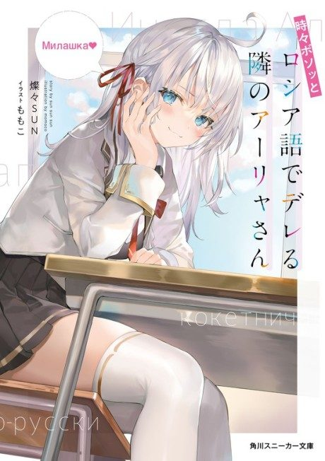

Anime
Anime
Light novel2024 · Comedy, Romance, Slice of Life
Alya Sometimes Hides Her Feelings in Russian
時々ボソッとロシア語でデレる隣のアーリャさん
AniList7.5
Animeter—
Episodes12 ep
SourceVol. 4
Anime finished. Where does the story go next?
Start at Volume4
Season 1 ends at the epilogue of volume 3, so continue with volume 4. Its prologue overlaps with the last episodes, so you can start with its first chapter.
13ongoing
Season 1Start reading here